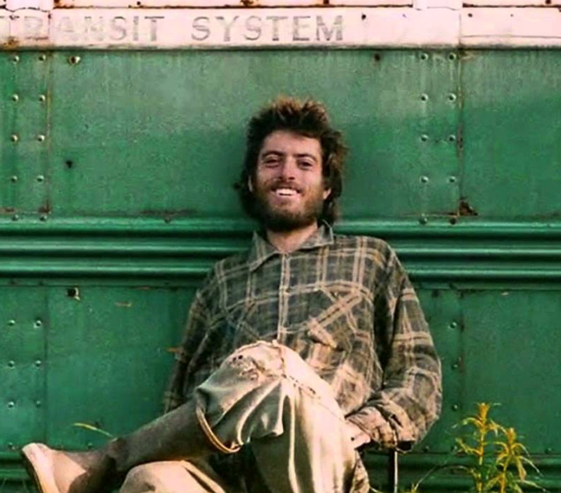

Biography:

Christopher Johnson McCandless (February 12, 1968 – c. August 1992), also known by his pseudonym Alexander Supertramp,was an American hiker who sought an increasingly itinerant lifestyle as he grew up.
Christopher Johnson McCandless was born in El Segundo, California. He was the eldest child of Wilhelmina "Billie" McCandless and Walter "Walt" McCandless and had a younger sister Carine. McCandless also had six half-siblings from Walt's first marriage, who lived with their mother in California and later Denver, Colorado.
After graduating from Emory University in Georgia in 1990, McCandless traveled across North America and eventually hitchhiked to Alaska in April 1992. There, he entered the Alaskan bush with minimal supplies,
hoping to live simply off the land. On the eastern bank of the Sushana River, McCandless found an abandoned bus, Fairbanks Bus 142, which he used as a makeshift shelter until his death. In September, his decomposing
body, weighing only 67 pounds (30 kg), was found inside the bus by a hunter. McCandless's cause of death was officially ruled to be starvation, although the exact circumstances relating to his death remain the subject of some debate.
In January 1993, Jon Krakauer, writer and alpinist, published an article about McCandless. Inspired by the details of McCandless' story, Krakauer
wrote the biographical book Into the Wild. The book was subsequently adapted into a 2007 film directed by Sean Penn, with Emile Hirsch portraying McCandless.
His trip to Alaska
By the end of summer in 1990, McCandless had driven his Datsun through California, Arizona, and South Dakota, where he worked at a grain elevator in Carthage. A flash flood disabled his car, at which point he removed its license plates, took what he could carry, and kept moving on foot. In April 1992, McCandless hitchhiked from South Dakota to Fairbanks, Alaska. He was last seen alive at the head of the Stampede Trail on April 28 by a local electrician , who had given McCandless a ride from Fairbanks to the start of the rugged track just outside the small town of Healy.
After hiking along the snow-covered Stampede Trail, McCandless came upon an abandoned bus alongside an overgrown section of the trail.
McCandless, according to Into the Wild, attempted to continue "heading west until I hit the Bering Sea." However, he was deterred by the thick Alaskan bush and returned to the
bus, where he set up camp and lived off the land. He had 4.5 kilograms (9.9 lb) of rice, a Remington semi-automatic rifle with 400 rounds of .22LR hollowpoint ammunition, a number of books, including one
on local plant life, some personal effects, and a few items of camping equipment. Self-portrait photographs and journal entries indicate he foraged for edible plants and poached game. McCandless poached porcupines,
squirrels, and birds, such as ptarmigans and Canada geese.
An impossible return
McCandless' journal documents 113 days in the area. In July, after living in the bus for a little over two months, he decided to head back to civilization—but the trail was blocked by an impassable Teklanika River swollen
with late-summer runoff from the Cantwell Glacier: The watercourse by that stage was considerably higher and swifter than when he had crossed in April. McCandless did not have a detailed topographical map of the region and
was unaware of the existence of an abandoned hand-operated cable car that crossed the river 1⁄2 mile (800 m) downstream from where he had previously crossed.
At this point, McCandless headed back to the bus and re-established his camp. He posted an S.O.S. note on the bus stating:
"Attention Possible Visitors. S.O.S. I need your help. I am injured, near death, and too weak to hike out. I am all alone, this is no joke. In the name of God, please remain to save me. I am out collecting berries close by and shall return this evening. Thank you, Chris McCandless. August?"
McCandless' final written journal entry, noted as "Day 107", simply read, "BEAUTIFUL BLUE BERRIES. Days 108 through 112 contained no words and were marked only with slashes, and on Day 113 there was no entry. The exact time and date of his death are not known. Near the time of his death, McCandless took a picture of himself waving while holding a written note, which read:
"I HAVE HAD A HAPPY LIFE AND THANK THE LORD. GOODBYE AND MAY GOD BLESS ALL!"
On September 6, 1992, a group of hunters who were looking for shelter for the night came upon the converted bus where McCandless had been staying. Upon entering, they smelled what they thought was rotting food and discovered "a lump" in a sleeping bag in the back of the bus. The hunters quickly radioed police, who arrived the following day. They found McCandless' decomposing remains in the sleeping bag. It is theorized that he died from starvation approximately two weeks before his body was found.
Achievements
A quest for "ultimate freedom"
After reading countless books of Jack London, Henry David Thoreau, and being trapped in the modern world of emphasis on “things” and money, Christopher McCandless ventured off to find what freedom is. Into the Wild tells his story.
It was after graduating from Emory College that McCandless decided that he no longer wanted to live in the society he has come to known. He didn’t want a fancy job or a nice car. McCandless wanted what every one of us have wanted at least once in our life : to escape. He wanted to find and be himself, unaffected by any unnatural factors of the modern world.
Starting all over again
The first thing McCandless did was decide to donate his life savings–$24,000–to charity. He then drove his car to the side of the road, and burned the remaining money he had along with his social security card, then proceed to cut up his ID and credit cards. McCandless doesn’t tell a single person where he is going, and starts his odyssey to Alaska to explore the American wilderness. To start his new life he decides to go by a new name, Alexander Supertramp, a sort of re-birth into this new life he was to lead.
Along with the desire to escape from the grip of reality, one of McCandless’ biggest freedoms he desired was from was his own parents. They were a perfect representation of the life he saw inevitable if you got sucked too far into the society he escaped. McCandless’ parents had an abusive relationship with each other, fighting frequently in front of him and his sister, Carnie.
Once McCandless found out that his father had a wife and children before and during when McCandless was born, he felt utterly betrayed. The narrator, his sister, tells the audience that Christopher found it “a murder to every day’s truth” (Into the Wild). McCandless valued truth above all things.
In one sense, McCandless was on a quest for happiness. The feelings that he sought throughout his journey in nature coincide with the sense of the pure joy he found in freedom. This was the joy and freedom he was seeking from the beginning that compelled him so much to leave. Nature provided him with uninterrupted and unspoiled joy.
How he inspired me:
Travel
I always wanted to travel and I found the idea of crossing countries with no specific goals and limit of time really tempting.
I traveled myself alone through New-Zealand and understood the strength and tranquility Christopher McCandless found in nature. The idea of not knowing what tomorrow will be
is aswell very exciting :
“There is no greater joy than to have an endlessly changing horizon, for each day to have a new and different sun.”
Search for Independance
To be in autonomy, far away from family and friends made me really proud of myself. I realized I was full of ressources and didn't need to rely on others.
Though I am very of what I have achieved, I nevertheless could never completely cut myself from the civilization like he did. As Christopher MacCandless said in his personal journal:
"Happiness is only real when shared"
Living with the bare minimum
Of course, I could never live with just a backpack and no money, completely cut off the world. But I try in my everyday life to limit the goods that I don't need, mainly for ecological reasons.
More info
Checkout where he started his trip:
It's from here, Segundo, California that he started his trip all the way up to Alaska, till the Stampede trail in the Denali National park.
His differents stops:
- Arizona
- Colorado
- South Dakota
- Canada
- Finally Fairbanks, Alaska
Web Page
Have a look at this < < Web-Page > > Written by fans, you can even ask questions about him on a forum.
Follow social media accounts created by fans:
Movie
Here's the trailer from Into the wild, directed by Sean Penn.
Book
Find out more here about the book written by Jon Krakauer. Written in 1996, Into the Wild is an international bestseller which has been printed in 30 languages and 173 editions and formats.
Newsletter
Register here: